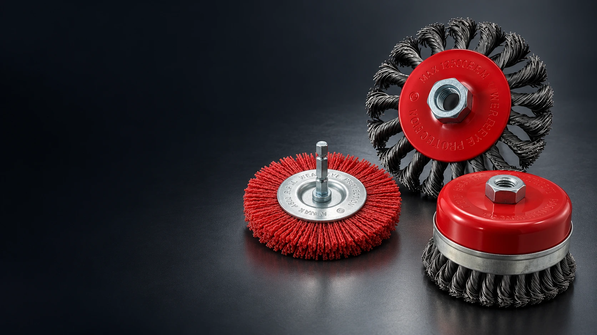

THE YE KAI COLLECTION
A better finish.
A stronger
partnership.
Industrial brushes & abrasives.
Manufactured for your market.
WIRE BRUSHES / ABRASIVE FILAMENTS / FLAP DISCSSCROLL TO EXPLORE ↓
Direct from the manufacturerOne partner. A complete brush range.
Built around your businessProduct, branding and packaging options.
Ready for international tradeFor importers, distributors and wholesalers.
EXPLORE OUR EXPERTISE
The right brush.
For every next step.
From surface preparation to finishing.
Find the range that fits your business.


YONGKANG, ZHEJIANGWhere our products begin.
MEET YOUR MANUFACTURING PARTNER
Good tools begin
with the details.
We are YeKai, a manufacturer of wire brushes and abrasive tools based in Yongkang, China. Our range brings together wire wheels, abrasive filament brushes, cup brushes and flap discs for international markets.
From selecting the wire to preparing your packaging, we work with you to define the product your customers need.
✓ Multiple wire & filament options✓ Custom branding & packaging✓ Samples before bulk orders
Start a conversation ↗PRODUCT DOCUMENTATION
Documents behind the details.
Explore our assessment documents, test report and patent certificates. Refer to each document for its covered models and scope.
MEET YEKAI
Real products.
Personal connections.
A closer look at our exhibition booth, product displays and conversations with visitors.
Talk with Frank ↗PRODUCT SOURCING GUIDES
Find your product. Define your order.
OUR COMPLETE PRODUCT RANGE
Made for your market.
Browse every series in our company catalog.
Open a product to explore its specifications.


YOUR BRAND. OUR CRAFT.
Make it
your own.
Build a product range with your name on it. From double-blister packs to color boxes and brush sets, let’s find the presentation that fits your market.
Discuss an OEM project ↗PACKAGING OPTIONS / YE KAI
THE TECHNICAL COLLECTION
Every detail, in one place.
Original product pages, dimensions and configurations.
Explore all 12 product pages without leaving the site.
A CLEAR PATH TO YOUR NEXT ORDER
Choose your range
Share your products, dimensions, materials and expected quantities.
Confirm the details
Review samples, packaging, pricing and shipping with Frank.
Build your order
Confirm your specifications and agreed terms before production.
LET’S TALK BUSINESS
Your next range
starts here.
Tell us what you’re looking for.
Talk directly with Frank, your contact at YeKai.
Frank YuSales Manager · YeKai Abrasives
+86 19883954016 ↗Orders that fit your business
Small trial orders are welcome without custom packaging. Trial orders do not qualify for wholesale pricing, and freight per piece is higher on small shipments.
For custom packaging, the RMB 300 printing plate fee is waived for a total order of 5,000 pieces with 2–4 models combined in one print layout. Confirm artwork and model allocation before production.
EXW / FOB / CIF. Product prices, freight and dispatch dates are quoted after specifications, quantity and destination are confirmed.